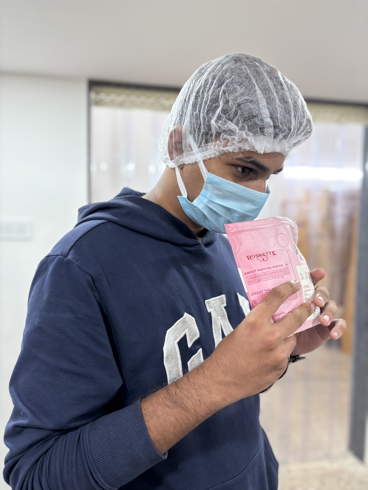
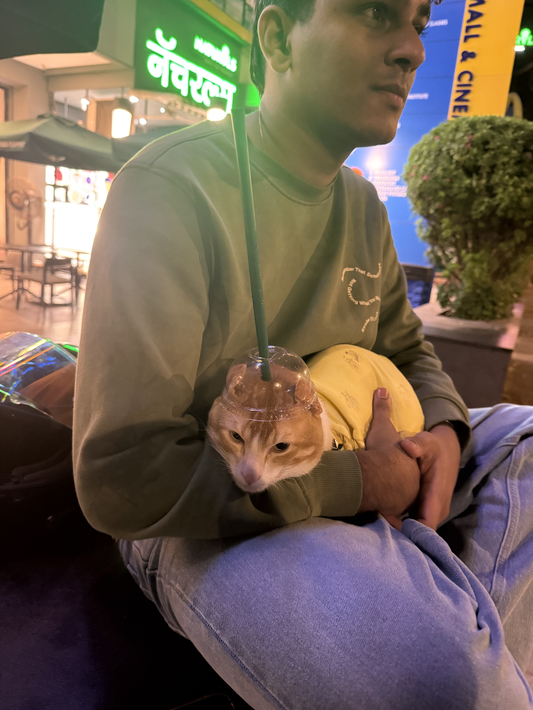

ABOUT — CREATIVE, HONEST, PERFORMANCE.
Digital Marketer | Content Strategist
Mumbai-based marketer bridging narrative storytelling, video production, and high-engagement digital experiences. Driven by consumer behavior, visual flow, and data-backed creative from high-pacing content strategy and travel narrative to building scalable digital platforms from the ground up.
Intro — Who I Am
I'm Anup. I’m a Mumbai-based digital creator, gamer, and open-road enthusiast with a passion for visual storytelling.
My creative mindset is shaped by everything from brain-teasers like Sudoku and Tetris to immersive, action-packed worlds like Cyberpunk, GTA, and Call of Duty.
Navigating these games taught me a lot about pacing, energy, and visual flow of things I bring directly into my video shooting and editing work.
When I’m not behind a screen cutting together fresh edits, you’ll find me out on the open road.
Riding my bike and taking off on long trips is my ultimate way to clear my mind and explore new places.
I love bringing these worlds together: combining gaming strategy, not so sharp post-production, and raw travel stories into dynamic content.
I also made this website, so yeah, that too...
My Story
[ Journey ]To be honest, wanting to be a DJ was just something I was playing around with because I liked music and thought it’d be a cool gig. But my actual path into marketing started way before that, completely by accident during lockdown with PUBG.
I wanted to host tournament rooms and make money, but I had zero audience. I had to figure out Discord from scratch. At first, I had no clue what I was doing. I’d join random servers, spam public channels with tournament ads, and get banned almost immediately.
That trial and error taught me fast. I had to actually understand how Discord communities worked, how to talk to people without getting kicked out, and how to pitch an event so players would actually trust us and pay to join. Once I cracked that code, the rooms filled up, and I was making actual money. I was doing cold outreach, community building, and campaign testing before I even knew those were marketing terms.
Even then, I didn't see it as a career yet. I was still just drifting, not really sure where I was heading long-term.
Then in 2022, my mom passed away.
That hit me hard. I was completely lost and didn't know what to do with my life. But losing her was the ultimate wakeup call. It forced me to stop floating, face reality, and start taking my future seriously.
When I looked back at what I was actually good at. From learning Discord the hard way to filling PUBG tournaments and even looking into how DJs promote themselves, I realized I already had the instincts for marketing. I just needed to stop treating it like a side hustle and start treating it like a profession.
That’s why I chose digital marketing. Losing my mom made me grow up overnight, take control of my life, and build a real, structured career out of skills I’d been testing in the real world all along

PHOTO 2
PHOTO 3Skills — Creative x Performance
[ 02 — What I Do ]Creative Strategy
- Hook writing & first 3s
- UGC brief & direction
- Pattern interrupt systems
- Creative iteration loops
Meta Ads Manager
- Advantage+ setup
- CBO / ABO testing
- Breakdowns & custom columns
- Fatigue & hold rate tracking
Vibe Coding & Design
- Brutalist product design
- Framer / Next.js prototypes
- Type systems — Syne h3/h4
- Fast shipping mindset
Tools I Use Daily
[ 03 — Stack ]Certificates
[ 04 — Proof of Learning ]Verified credentials — replace links with your actual certificate URLs later. Each card has View Credential placeholder.